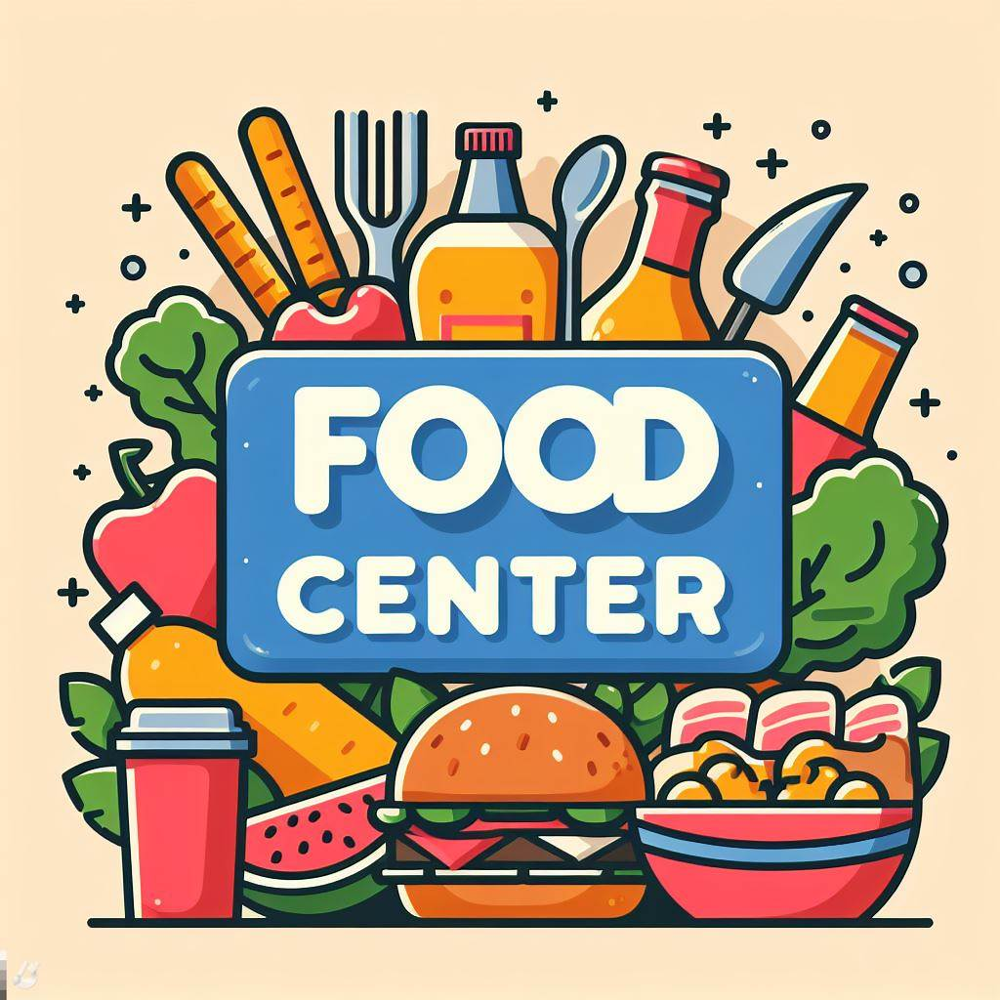

Welcome to Food Center, where passion meets flavor! We are not just a food center; we are a culinary journey that aims to delight your taste buds and create memorable dining experiences. Our story is one of dedication, creativity, and a commitment to delivering exceptional food that goes beyond mere sustenance.
Founded in 2023, Food Center emerged from the passion of our culinary experts who set out to redefine the dining experience. Our chefs draw inspiration from global cuisines, blending traditional and contemporary flavors to craft dishes that are a feast for both the eyes and the palate.